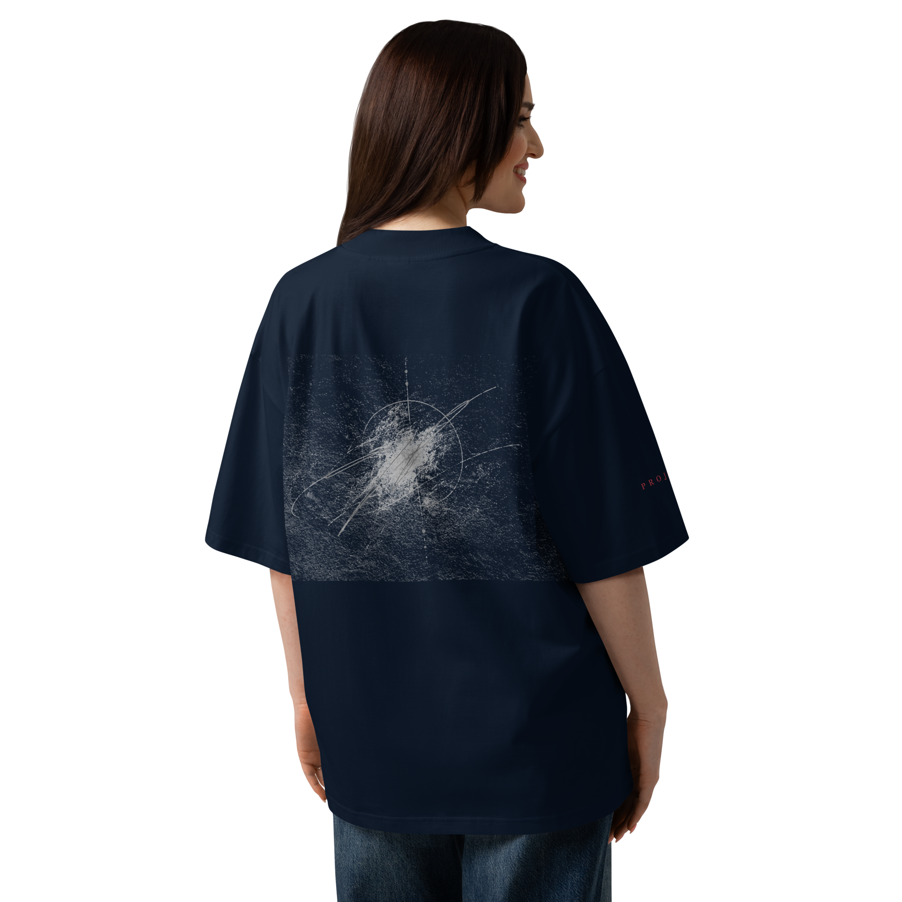
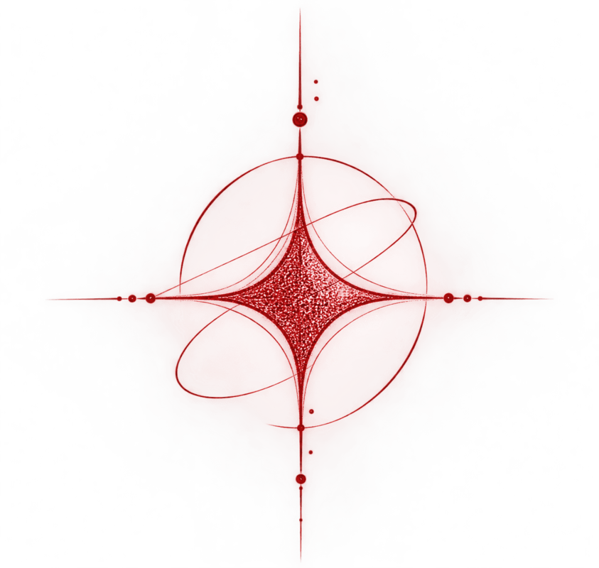
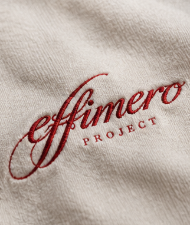
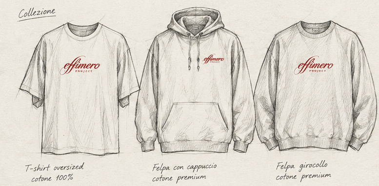

01 / Everyday essentials
Essential
Capi puliti, vestibilità curate e un ricamo discreto. L'essenziale, senza bisogno di alzare la voce.
Meno, ma con intenzioneAlcune cose svaniscono.
Altre lasciano qualcosa dentro di noi.
Un progetto indipendente che esplora ciò che cambia, ciò che passa e ciò che resta. Attraverso capi essenziali, ricami e segni imperfetti, trasformiamo un'emozione in qualcosa da indossare.

Ci sono cose che non durano per sempre, eppure riescono a lasciare qualcosa dentro di noi.
Un'emozione, un incontro, un ricordo. Un momento che sembra insignificante mentre lo stai vivendo, ma che con il tempo finisce per diventare parte di te.
Da qui nasce Effimero Project: dalla volontà di dare forma a ciò che è destinato a cambiare, svanire o trasformarsi. Dall'idea che la bellezza non risieda necessariamente in ciò che rimane, ma anche in ciò che, pur durando poco, riesce a lasciare un segno.
Per molto tempo, Effimero è rimasto un pensiero. Un progetto custodito nel silenzio, sospeso tra il desiderio di realizzarlo e la paura di vederlo fallire. La paura che non arrivasse a nessuno, che non trovasse il proprio posto, che un giorno svanisse senza aver lasciato nulla.
Effimero Project nasce anche da questo: dal coraggio di dare una possibilità a qualcosa, senza sapere dove porterà. Dal desiderio di trasformare un pensiero in qualcosa di reale, anche accettando l'incertezza che accompagna ogni nuovo inizio.
Il progetto prende forma attraverso capi essenziali, materiali scelti con cura, ricami e segni grafici che ricordano tracce lasciate sulla carta. Linee imperfette, forme che si dissolvono, dettagli che sembrano consumarsi con il tempo.
Non vogliamo inseguire ogni tendenza, né creare qualcosa che abbia bisogno di urlare per essere notato. Vogliamo dare spazio a ciò che è autentico, alle emozioni che non sappiamo spiegare e a quei momenti che, anche quando finiscono, continuano a vivere dentro di noi.
Un linguaggio comune, tre interpretazioni: essenziale, ricercato, sperimentale. Ogni linea è pensata per dare forma a un diverso frammento della stessa idea.

Capi puliti, vestibilità curate e un ricamo discreto. L'essenziale, senza bisogno di alzare la voce.
Meno, ma con intenzione
Materiali più materici, ricami curati e dettagli che si scoprono da vicino. La qualità è nei particolari.
La cura, punto per punto
Capsule artistiche, schizzi e segni in trasformazione. Piccole uscite per idee che meritano spazio.
Ogni segno ha una storiaLe linee presentate sono una visione del progetto e non rappresentano necessariamente prodotti già disponibili.
Crediamo nelle cose che hanno valore anche quando cambiano. Nei gesti piccoli, nei segni imperfetti, nelle emozioni che non hanno bisogno di una spiegazione.
La vita è fatta di attimi. Alcuni passano, altri diventano parte di noi. Entrambi contano.
Un ricamo, un tratto di grafite, una linea interrotta: ciò che resta non deve essere perfetto per essere vero.
Meno rumore, più significato. Capi pensati per essere vissuti, non solo guardati.
Effimero Project è un progetto in divenire. Se questa idea ti somiglia, resta vicino: il prossimo capitolo deve ancora essere scritto.
Scrivici